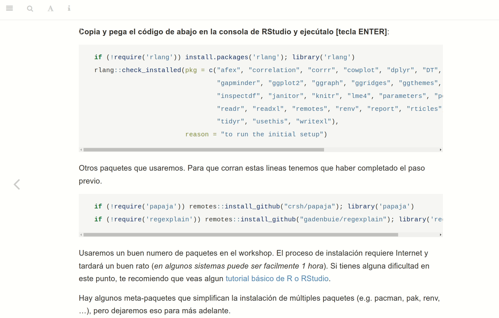

Preparando nuestro sistema
Antes de empezar, si tienes dificultades o curiosidad sobre el manejo básico de R, te recomiendo que veas algún tutorial de R y RStudio para principiantes como éste, o éste.
Empezando en A-B-C
Para poder iniciar el workshop necesitamos tener R y RStudio instalados, además de algunas librerías. Para tener un sistema funcional, completa los pasos A, B y C. Si ya tienes R y Rstudio instalados (recientemente), puedes pasar directamente al paso (C).
(A) Instalar R
R, es un lenguaje de programación especializado en la computación estadística y visualización de datos. Es recomendable tener instalada la última versión de R (necesitarás al menos la versión 4.2). Puedes usar uno de los enlaces siguientes:
Windows: Descargar e instalar R para Windows
Ubuntu Linux: más detalles en la web de R.
En un terminal:
sudo apt install r-base
(B) Instalar RStudio
RStudio es un entorno integrado de desarrollo (IDE) para la programación R.
- Descargar e instalar RStudio.
- Una vez descargado e instalado, abre RStudio. Deberías ver algo parecido a lo siguiente:
- Si encuentras un error de instalación en ubuntu, tendrás que instalar RStudio manualmente:
sudo dpkg -i rstudio-[VERSION_NUMBER]-amd64.debsudo apt --fix-broken install
(C) Paquetes para el workshop
Para instalar los paquetes del workshop, ejecuta el código de más abajo (sección sombreada en gris claro) en la consola de RStudio.
En este gif puedes ver como hacerlo:

Copia y pega el código de abajo en la consola de RStudio y ejecútalo [tecla ENTER]:
if (!require('rlang')) install.packages('rlang'); library('rlang')
rlang::check_installed(
pkg = c("afex", "broom.mixed", "correlation", "corrr", "cowplot", "dplyr", "DT", "esquisse",
"gapminder", "geomtextpath", "ggplot2", "ggrain", "ggraph", "ggridges", "ggthemes",
"ggtext", "googlesheets4", "grateful", "gtsummary",
"haven", "here", "hexbin", "inspectdf", "janitor", "knitr", "lme4",
"papaja", "parameters", "performance", "plotly", "purrr",
"quarto", "readODS", "readr", "readxl", "remotes", "renv", "report",
"rticles", "see", "sjPlot", "stargazer", "tidyr", "usethis", "writexl"),
reason = "to run the initial setup")
Si falla el codigo de arriba, puedes intentar esto
if (!require('pak')) install.packages('pak'); library('pak')
pak::pak(
pkg = c("afex", "broom.mixed", "correlation", "corrr", "cowplot", "dplyr", "DT", "esquisse",
"gapminder", "geomtextpath", "ggplot2", "ggrain", "ggraph", "ggridges", "ggthemes",
"ggtext", "googlesheets4", "grateful", "gtsummary",
"haven", "here", "hexbin", "inspectdf", "janitor", "knitr", "lme4",
"papaja", "parameters", "performance", "plotly", "purrr",
"quarto", "readODS", "readr", "readxl", "remotes", "renv", "report",
"rticles", "see", "sjPlot", "stargazer", "tidyr", "usethis", "writexl"))Otros paquetes que necesitaremos. Para que corran estas líneas tenemos que haber completado el paso previo.
if (!require('remotes')) install.packages('remotes'); remotes::install_github('gorkang/jsPsychAdmin')
if (!require('regexplain')) remotes::install_github("gadenbuie/regexplain"); library('regexplain')Usaremos un buen número de paquetes en el workshop. El proceso de instalación requiere Internet y tardará un buen rato (en algunos sistemas puede llegar a 1 hora).
Hay algunos meta-paquetes que simplifican la instalación de múltiples paquetes (e.g. pacman, pak, renv, …), pero dejaremos eso para más adelante.
Otras dependencias a instalar
Instalar Quarto
Quarto es un sistema de publicación de código abierto que funciona con diferentes lenguajes de programación como R o python. Lo usaremos a partir del capítulo 6.
Instalar latex
Para generar pdf’s necesitaremos tener instalado Latex. tinytex nos ayudará a simplificar el proceso:
if (!require('tinytex')) install.packages('tinytex'); library('tinytex')
tinytex::install_tinytex() # Llevará un buen ratoDocker
Necesitaremos Docker para simular datos de participantes online.
Instala Docker en:
Adicionalmente:
Windows: Update wsl (in a command prompt): wsl - update
-
Ubuntu:
- En un terminal:
sudo apt install libssl-dev libcurl4-openssl-dev libxml2-dev docker - Si los monos hacen su trabajo pero no aparecen los csv’s, asegúrate que el usuario
dockertiene acceso al directorio ~/Downloads
- En un terminal:
Para más detalles, puedes consultar jsPsychMonkeys setup
Git
Ver instrucciones para Windows, Mac y Linux.
Importante: en el paso Adjusting your PATH environment en en Windows, selecciona Git from the command line and also from 3rd-party software
Algo más sobre la instalación de paquetes
Los paquetes de R son una colección de funciones, datos y documentación que amplían las capacidades básicas de R.
Gran parte de las funciones y paquetes que utilizaremos en este workshop se encuentran contenidas en el meta-paquete tidyverse (este es un paquete de paquetes). No lo instalamos en (C), pero si quisieras instalarlo solo tendrías que ejecutar la siguiente linea en la consola de RStudio:
install.packages("tidyverse")Para instalar otro paquete diferente de “tidyverse”, remplaza su nombre entre comillas dentro de la función:
install.packages("NOMBRE_DE_PAQUETE")Una vez instalado un paquete, no es necesario volver hacerlo, a menos que reinstales R.
Cargar paquetes
Las funciones, datos y documentación dentro de nuestros paquetes no podrán ser utilizadas hasta que se carguen en R. Una vez instalados, para cargar los paquetes se usa la función library():
En realidad las funciones también pueden ser llamadas usando su referencia absoluta ::, sin necesidad de cargarlas antes. Por ejemplo: dplyr::tibble(columna = 1). En general: nombre_paquete::nombre_de_funcion(parametros)).
Todo en uno
El siguiente código simplifica lo anterior. Comprueba que el paquete esta instalado; Si no se encuentra instalado, lo instala. Finalmente lo carga.
if (!require('tidyverse')) install.packages('tidyverse'); library('tidyverse') Para instalar múltiples paquetes, podemos repetir la linea de mas arriba tantas veces como sea necesario, o usar una versión algo más sofisticada como el código del apartado (C):
if (!require('tidyverse')) install.packages('tidyverse'); library('tidyverse')
if (!require('bookdown')) install.packages('bookdown'); library('bookdown')Al principio de cada capítulo, verás una sección llamada Paquetes para este capítulo. Si pegas el contenido de esa sección en un script de R al empezar cada capítulo, te asegurarás de tener disponibles todas las funciones que usaremos.
Instalar paquetes de Github
En ocasiones querremos instalar directamente la versión en desarrollo del paquete desde Github. Para eso podemos usar la función install_github() del paquete remotes. Por ejemplo, para instalar el paquete {BayesianReasoning} desde su repositorio de Github:
if (!require('remotes')) install.packages('remotes'); library('remotes')
remotes::install_github("gorkang/jsPsychMaker")Bibliografía
Algunos de los manuales que vamos a usar para el workshop son los siguientes:
Wickham, H., & Grolemund, G. (2016). R for data science: import, tidy, transform, visualize, and model data. O’Reilly Media, Inc. https://r4ds.had.co.nz/
Xie, Y., Allaire, J. J., & Grolemund, G. (2018). R Markdown: The Definitive Guide. CRC Press. https://bookdown.org/yihui/rmarkdown/
Bryan, J., & Hester, J. What They Forgot to Teach You About R. https://whattheyforgot.org/